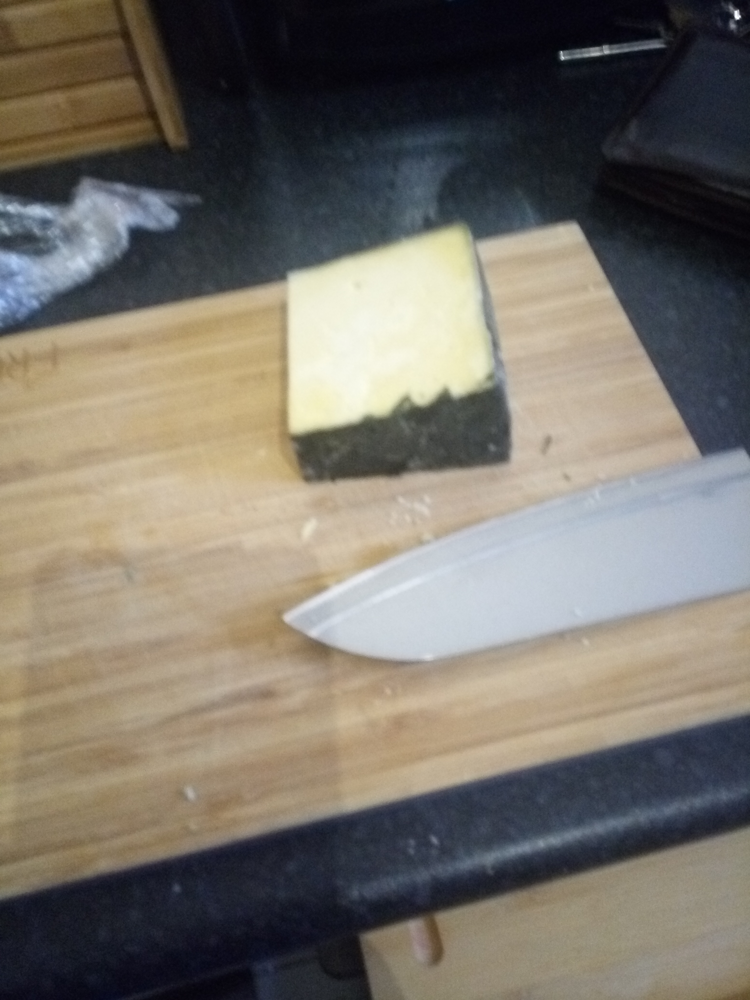
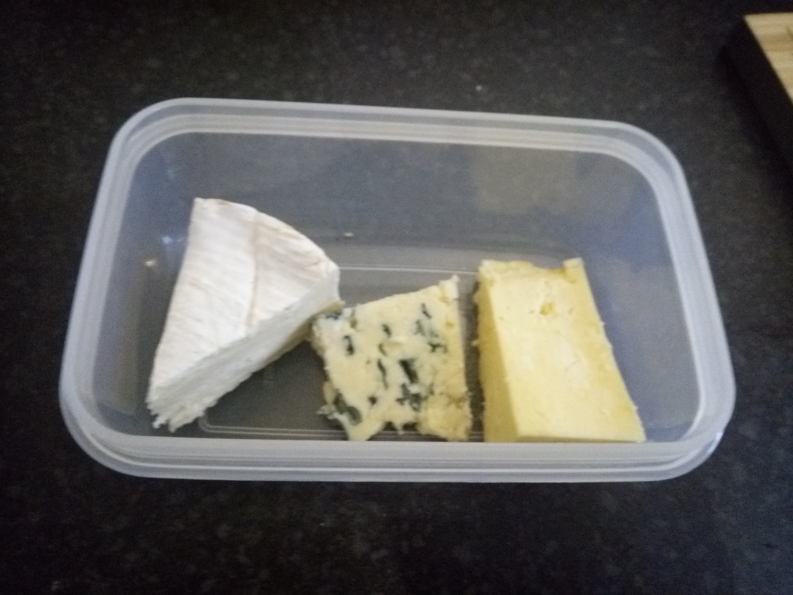

Make a cheese board
Clearly no lunch is completely snazzy without a cheese board. A cheese board is something you curate from the local selection available but this is an example which I think works well
Tools
Ingredients
- 1 hefty chunk of Cornish Yarg
- 1 wedge of Camembert
- 1 slice of bleu d'Auvergne
Containers
Method:
A simple cheeseboard should generally contain at lease one soft cheese, one hard cheese, and a blue cheese. I suggest putting a hefty chunk of Cornish Yarg, a medium sized wedge of Camembert, and a reasonable slice of bleu d'Auvergne. Generally I cut the rind off the bleu d'Auvergne and Yarg with a sharp knife, before placing in a Tupperware tub.

